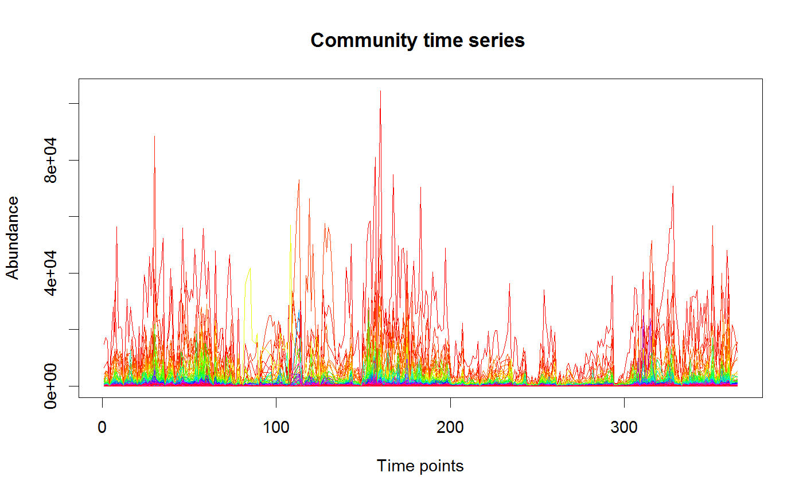

Wrapper function to interpolate a time series.
interpolate(x, interval = NA, time.index = NA, time.vector = c(), method = "stineman")
| x | the time series matrix, rows are objects and columns are time points |
|---|---|
| interval | the target intervals to be present after interpolation |
| time.index | the row index holding time points |
| time.vector | the vector holding time points |
| method | fmm, periodic, natural, hyman or monoH.FC (spline), scaledstineman, stineman or parabola (stinterp) |
interpolated time series
If no interval is provided, the intervals in the time vector are computed and the most frequent one is taken as the interval. The default interpolation method is stineman. Note that interpolation can introduce negative values in the abundance matrix.
data("david_stoolA_otus") data("david_stoolA_metadata") days=david_stoolA_metadata[1,] sorted=sort(apply(david_stoolA_otus,1,sum),decreasing=TRUE,index.return=TRUE) davida.top=david_stoolA_otus[sorted$ix[1:100],] tsplot(interpolate(davida.top,time.vector=days))#> [1] "Selected interval: 1" #> [1] "Length of time series: 329" #> [1] "Length of time series after interpolation: 365"